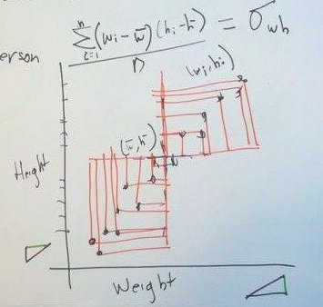
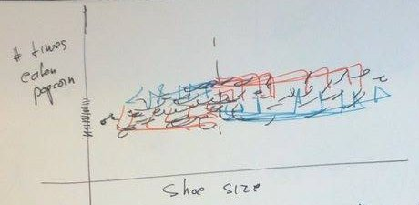
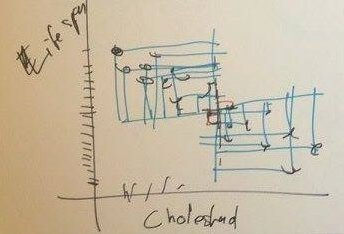
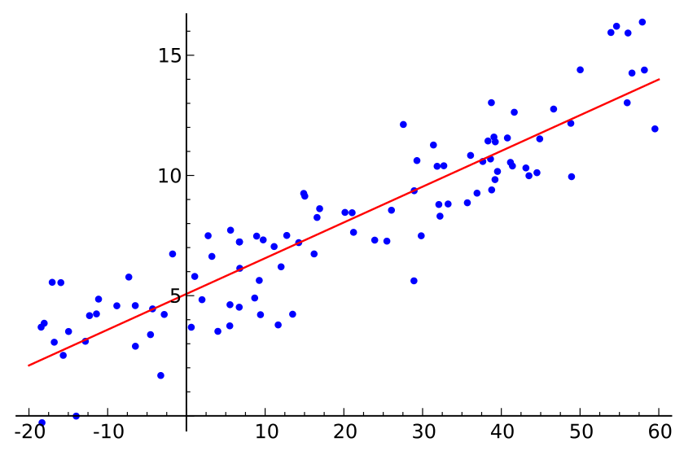

Statistics through doodles
A statistic is a number that describes a lot of other numbers. By reducing many numbers into one number, we make it easier to figure out what the numbers mean; we wouldn’t be able to fit all of the original numbers in our brain.
People usually explain statistics with symbols, but I like explaining statistics with drawings, I doodled about statistics one time in Sudoroom, and we took videos of it. Watch them here!
The videos gloss over the reasons why we have these statistics, so I discuss those reasons below.
Geometric computations
In the video, I geometrically computed four statistics about the relationships between different variables.
- Covariance
- Variance
- Correlation
- Least-squares regression coefficients
Each computation is for the simplest version of the statistic. For those who like big words, that’s the univariate or bivariate version, and the population statistic rather than the sample statistic.
Why we care about these statistics
The videos show the computations of these statistics, but they don’t really explain why we use these statistics. So I’ll explain that here.
Linear relationships
A lot of relationships can be seen as linear relationships. One such relationship is that between a person’s height and weight; taller people are heavier, and shorter people are lighter.
A relationship that isn’t very linear might be public transit ridership and time. As time progresses, weekly public transit ridership stays the same. However, it does change a lot within the week, with high ridership on the weekdays, low ridership on Saturdays and lower ridership on Sundays.
The example I used in the video is locations where your friends live, which might form clusters rather than lines.
The four statistics that the videos discuss are ways of describing the strength of a relationship, and they only make sense to use with linear relationships.
Covariance
Covariance is a basic measure of how strong the relationship is. It is just a number that is
- zero if there is no relationship,
- really big if the two variables tend to move in the same direction, and
- really negative if the two variables tend to move in opposite directions.
For example, the covariance between weight and height is a very positive number, like maybe 9001, because taller people are heavier. This postive covariance is represented in the video as lots of orange rectangles in the top-right and bottom-left quadrants.

The covariance between number of times a person has eaten popcorn and her shoe size is probably around zero, because I doubt that these are very strongly related. In the video, we see this as orange and blue rectangles balancing out.

And the covariance between cholesterol level and lifespan is probably a very negative number, like maybe -1337, because people with more cholesterol tend to live less long. That’s blue rectangles, with my doodles’ conventions.

We tend not to use the covariance very directly in practice because it’s hard to compare covariances directly to each other. The reasons for this are explained in the video.
Variance
Variance is a measure of how spread out one variable is. It is a positive number that gets big when the variables are more spread out.
Let’s say that two people are cutting wood to build a house. They cut 10 pieces of wood each, and each piece of wood is supposed to be exactly 120 inches long.
One person is very careful when he measures the wood, so his pieces come out perfectly. They’re not exactly 120 inches long because that’s impossible, but they’re not spot-on for the purposes of construction. The variance of the lengths of his pieces of wood is very close to zero, like maybe 3.
The other person is drunk and stoned and thus not very careful, so the lengths of his pieces are all over the place. They’re still around 10 feet long on average, but some of them are 8 feet long, and others are 11 feet long. The variance of the lengths of this person’s pieces is very high; maybe it’s 300.
We talk about variances a lot when we are estimating the average of a variable. When we estimate an average, we want to know how precise our estimate is, and the variance tells us that.
Correlation
Think of the correlation as a standardized version of the covariance. The correlation is a number between -1 and 1. Like for the covariance, positive correlations mean that the variables move together, and negative correlations mean that the variables move oppositely.
Like the covariance, the correlation tells us how strongly two variables are related. The practical difference is that we can compare different covariances to each other.
We can compute the correlation between two variables based on the covariance between the two variables and the respective variances of the two variables.
Least-squares regression
Maybe you want to be able to guess someone’s height based on her weight. Regression is one way of doing this.
To predict height from weight, we can use a simple regression that would tell us two statistics (numbers). In order to calculate these numbers, we first need to measure the heights and weights of a bunch of people.
Once we calculate these two numbers, we have a formula for predicting height; you give the formula a weight, and it will give you back a predicted height.
The formula is a best-fit line, as shown in this image from Wikipedia
{kind=link}

Let’s say we want to know how big a balloon gets depending on the temperature of the air. We fill a bunch of balloons with air and put them in different places, each with a different air temperature. In the plot above, each dot would be a balloon, the numbers along the x-axis (the bottom) would be the temperature, and the numbers along the y-axis would be the volume of the balloon. That is the data we started with.
Using these data, we calculate those two regression statistics I mentioned above. With these, we can draw the red regression line.
When we want to predict what the volume of a balloon will be at a particular temperature, we find the temperature on the x-axis, follow it vertically up to the red line, then follow it horizontally to the y-axis. This is our predicted volume.
Why statistics and math and doodles
Statistics lets us distill our complex observations of the world into simple numbers that are easier to understand. Covariance, variance, correlation and least-squares regression are some statistics that are commonly used. The text explains why we use them, and the video explains how we calculate them.
The formulae for these statistics get a bit confusing when you write them out as symbols, but math can always be drawn, and it usually makes more sense that way.